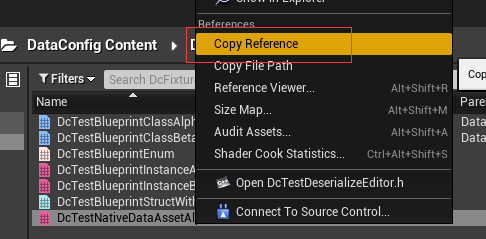

Deserialize JSON
DataConfig bundles a set of JSON deserialize handlers. Setup by calling DcSetupJsonDeserializeHandlers():
// DataConfig/Source/DataConfigTests/Private/DcTestBlurb.cpp
#include "DataConfig/Deserialize/DcDeserializerSetup.h"
//...
// create and setup a deserializer
FDcDeserializer Deserializer;
DcSetupJsonDeserializeHandlers(Deserializer);
Basics
JSON types get mapped into DataConfig data model in a very unsurprising way.
| JSON Type | DcDataEntry |
|---|---|
| Boolean | Bool |
| Null | Nil |
| String | String, Name, Text, Enum |
| Number | (All numerics) |
| Array | Array, Set |
| Object | Class, Struct, Map |
Here's an example:
// DataConfig/Source/DataConfigTests/Private/DcTestDeserialize.cpp
FString Str = TEXT(R"(
{
"BoolField" : true,
"NameField" : "AName",
"StringField" : "AStr",
"TextField" : "AText",
"EnumField" : "Tard",
"FloatField" : 17.5,
"DoubleField" : 19.375,
"Int8Field" : -43,
"Int16Field" : -2243,
"Int32Field" : -23415,
"Int64Field" : -1524523,
"UInt8Field" : 213,
"UInt16Field" : 2243,
"UInt32Field" : 23415,
"UInt64Field" : 1524523,
}
)");
// deserialized equivelent
FDcTestStruct1 Expect;
Expect.BoolField = true;
Expect.NameField = TEXT("AName");
Expect.StringField = TEXT("AStr");
Expect.TextField = FText::FromString(TEXT("AText"));
Expect.EnumField = EDcTestEnum1::Tard;
Expect.FloatField = 17.5f;
Expect.DoubleField = 19.375;
Expect.Int8Field = -43;
Expect.Int16Field = -2243;
Expect.Int32Field = -23415;
Expect.Int64Field = -1524523;
Expect.UInt8Field = 213;
Expect.UInt16Field = 2243,
Expect.UInt32Field = 23415;
Expect.UInt64Field = 1524523;
Enum Flags
UENUM that get marked with Bitflags meta are deserialized from a list of strings:
// DataConfig/Source/DataConfigTests/Public/DcTestDeserialize.h
UENUM(meta = (Bitflags))
enum class EDcTestEnumFlag :uint32
{
None = 0,
One = (1 << 0),
Two = (1 << 1),
//...
};
ENUM_CLASS_FLAGS(EDcTestEnumFlag);
// DataConfig/Source/DataConfigTests/Private/DcTestDeserialize.cpp
FString Str = TEXT(R"(
{
"EnumFlagField1" : [],
"EnumFlagField2" : ["One", "Three", "Five"],
}
)");
// deserialized equivelent
FDcTestStructEnumFlag1 Expect;
Expect.EnumFlagField1 = EDcTestEnumFlag::None;
Expect.EnumFlagField2 = EDcTestEnumFlag::One | EDcTestEnumFlag::Three | EDcTestEnumFlag::Five;
Sub Objects
By default We treat UOBJECT marked with DefaultToInstanced, EditInlineNew and UPROPERTY marked with Instanced as sub object. In this case we'll actually instantiate new object during deserialization, using Ctx.TopObject() as parent:
// DataConfig/Source/DataConfigTests/Public/DcTestProperty.h
UCLASS(BlueprintType, EditInlineNew, DefaultToInstanced)
class UDcBaseShape : public UObject
{
//...
UPROPERTY() FName ShapeName;
};
UCLASS()
class UDcShapeBox : public UDcBaseShape
{
//...
UPROPERTY() float Height;
UPROPERTY() float Width;
};
UCLASS()
class UDcShapeSquare : public UDcBaseShape
{
//...
UPROPERTY() float Radius;
};
// DataConfig/Source/DataConfigTests/Public/DcTestDeserialize.h
USTRUCT()
struct FDcTestStructShapeContainer1
{
GENERATED_BODY()
UPROPERTY() UDcBaseShape* ShapeField1;
UPROPERTY() UDcBaseShape* ShapeField2;
UPROPERTY() UDcBaseShape* ShapeField3;
}USTRUCT()
struct FDcEditorExtraTestObjectRefs1
{
GENERATED_BODY()
UPROPERTY() UObject* ObjField1;
UPROPERTY() UObject* ObjField2;
UPROPERTY() UObject* ObjField3;
UPROPERTY() UObject* ObjField4;
};
// DataConfig/Source/DataConfigTests/Private/DcTestDeserialize.cpp
FString Str = TEXT(R"(
{
"ShapeField1" : {
"$type" : "DcShapeBox",
"ShapeName" : "Box1",
"Height" : 17.5,
"Width" : 1.9375
},
"ShapeField2" : {
"$type" : "DcShapeSquare",
"ShapeName" : "Square1",
"Radius" : 1.75,
},
"ShapeField3" : null
}
)");
// deserialized equivelent
UDcShapeBox* Shape1 = NewObject<UDcShapeBox>();
Shape1->ShapeName = TEXT("Box1");
Shape1->Height = 17.5;
Shape1->Width = 1.9375;
Expect.ShapeField1 = Shape1;
UDcShapeSquare* Shape2 = NewObject<UDcShapeSquare>();
Shape2->ShapeName = TEXT("Square1");
Shape2->Radius = 1.75;
Expect.ShapeField2 = Shape2;
Expect.ShapeField3 = nullptr;
Note that the sub object criteria can be easily overridden with a new deserialize predicate or alternative FDcPropertyConfig when constructing the reader.
Object and Class Reference
We support multiple ways of referencing a UObject in memory or serialized on disk:
// DataConfig/Source/DataConfigEditorExtra/Private/DataConfig/EditorExtra/Tests/DcTestDeserializeEditor.h
USTRUCT()
struct FDcEditorExtraTestObjectRefs1
{
GENERATED_BODY()
UPROPERTY() UObject* ObjField1;
UPROPERTY() UObject* ObjField2;
UPROPERTY() UObject* ObjField3;
UPROPERTY() UObject* ObjField4;
};
// DataConfig/Source/DataConfigEditorExtra/Private/DataConfig/EditorExtra/Tests/DcTestDeserializeEditor.cpp
FString Str = TEXT(R"(
{
"ObjField1" : "DcEditorExtraNativeDataAsset'/DataConfig/DcFixture/DcTestNativeDataAssetAlpha.DcTestNativeDataAssetAlpha'",
"ObjField2" : "/DataConfig/DcFixture/DcTestNativeDataAssetAlpha",
"ObjField3" :
{
"$type" : "DcEditorExtraNativeDataAsset",
"$path" : "/DataConfig/DcFixture/DcTestNativeDataAssetAlpha"
},
"ObjField4" : null,
}
)");
// deserialized equivelent
UDcEditorExtraNativeDataAsset* DataAsset = Cast<UDcEditorExtraNativeDataAsset>(StaticLoadObject(
UDcEditorExtraNativeDataAsset::StaticClass(),
nullptr,
TEXT("/DataConfig/DcFixture/DcTestNativeDataAssetAlpha"),
nullptr
));
Expect.ObjField1 = DataAsset;
Expect.ObjField2 = DataAsset;
Expect.ObjField3 = DataAsset;
Expect.ObjField4 = nullptr;
In the example above, ObjField1 is using the reference string that can be retrieved in editor context menu:

For ObjField2/ObjField3 it's using a relative path to the uasset but without file name suffix.
We also support class reference fields of TSubclassOf<>s:
// DataConfig/Source/DataConfigTests/Private/DcTestDeserialize.h
USTRUCT()
struct FDcTestStructSubClass1
{
GENERATED_BODY()
UPROPERTY() TSubclassOf<UStruct> StructSubClassField1;
UPROPERTY() TSubclassOf<UStruct> StructSubClassField2;
UPROPERTY() TSubclassOf<UStruct> StructSubClassField3;
};
// DataConfig/Source/DataConfigTests/Private/DcTestDeserialize.cpp
FString Str = TEXT(R"(
{
"StructSubClassField1" : null,
"StructSubClassField2" : "ScriptStruct",
"StructSubClassField3" : "DynamicClass",
}
)");
// deserialized equivelent
FDcTestStructSubClass1 Expect;
Expect.StructSubClassField1 = nullptr;
Expect.StructSubClassField2 = UScriptStruct::StaticClass();
Expect.StructSubClassField3 = UDynamicClass::StaticClass();
Note that these do not support Blueprint classes. The direct reason is that Blueprint depends on Engine module and we'd like not to take dependency on in DataConfigCore.
We do have an example that supports Blueprint classes, see DataConfigEditorExtra - DcDeserializeBPClass.h/cpp
Caveats
Here're some closing notes:
-
For meta fields like
$typewe require it to be the first member, meaning object fields are order dependent. This means that the JSON we're supporting is a super set of standard JSON spec (again). -
There're many data types that can not be deserialized from JSON, for example
Delegate/WeakObjectReference. Remember that you always have the option to override or selectively enable the handlers to support additional property that makes sense in your context. SeeDcSetupJsonDeserializeHandlers()body how handlers are registered. You can skip this method and select the ones you want and provide additional handlers. -
The JSON handlers are designed to NOT read anything during the deserialization. This is crucial since
USTRUCTcan contain uninitialized fields. For example:// DataConfig/Source/DataConfigTests/Private/DcTestBlurb.cpp FString Str = TEXT(R"( { // pass } )"); FDcJsonReader Reader(Str); FDcTestExampleSimple Dest; FDcPropertyDatum DestDatum(FDcTestExampleSimple::StaticStruct(), &Dest); DC_TRY(DcAutomationUtils::DeserializeJsonInto(&Reader, DestDatum)); check(Dest.StrField.IsEmpty()); // but Dest.IntField contains uninitialized value DcAutomationUtils::DumpToLog(DestDatum); // dump results <StructRoot> 'DcTestExampleSimple' |---<Name> 'StrField' |---<String> '' |---<Name> 'IntField' |---<Int32> '1689777552' // <- arbitrary value <StructEnd> 'DcTestExampleSimple'This would cause trouble when you try read a pointer field during deserialization. Remember that primitive fields might be uninitialized during deserialization when implementing your own handlers.
-
One interesting trait of the pull/push styled API is that
FDcJsonReaderdoes not preemptively parse number into double and convert it toint/floatlater on. When reading a number token it would do the number parsing at call site. IfReadIntX()is called then the number is parsed as integer. IfReadFloat()/ReadDouble()is called the token will be parsed as floating point.